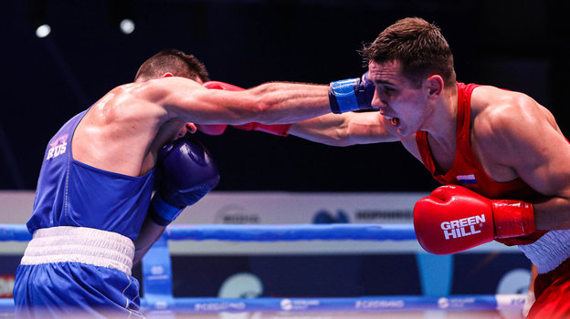
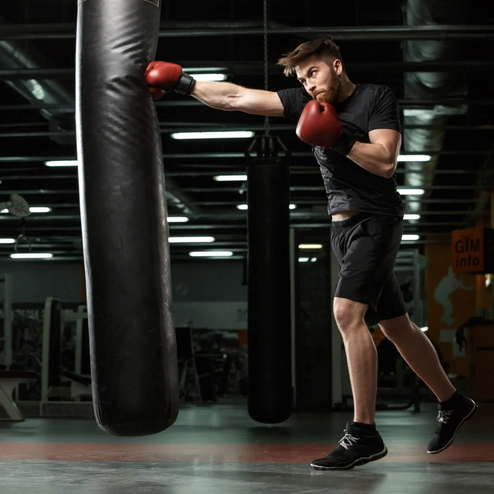

Информация о боксе

Бокс — это соревновательный и физически интенсивный вид спорта, в котором два бойца соревнуются друг с другом, используя только свои кулаки для нанесения ударов. Бойцы носят специальные перчатки и следуют определенным правилам, установленным специальными спортивными организациями. Бокс является одним из наиболее популярных и известных боевых искусств и спортивных дисциплин в мире.
Вот основные аспекты бокса:
Разновидности:
В боксе существует несколько разновидностей, включая профессиональный бокс, аматорский бокс и олимпийский бокс. Олимпийский бокс и аматорский бокс более ограничены в терминах разрешенных техник и степени контакта.
Раунды и матчи:
Бои в боксе проводятся в раундах, обычно от 3 до 12 раундов в зависимости от уровня соревнований. Каждый раунд длится определенное время (обычно 2-3 минуты) и сопровождается перерывами между ними.
Техники ударов:
Боксеры могут использовать различные удары, включая прямые удары, крюки, апперкоты и другие. Они стремятся нанести удары по голове, туловищу и корпусу соперника, чтобы заработать очки и добиться победы.
Тактика и стратегия:
Боксеры разрабатывают тактику и стратегию для каждого боя, учитывая свои сильные стороны, слабые стороны соперника и особенности стиля его бокса.
Защита:
Одной из ключевых аспектов бокса является защита от ударов. Боксеры учатся уклоняться, блокировать и отражать удары соперника.
Судейство:
Бои в боксе оцениваются судьями, которые присуждают очки за успешные удары, а также защиту и общую техническую подготовку бойцов.
Профессиональные лиги:
В профессиональном боксе бойцы могут участвовать в матчах, имеющих больший степень контакта и длительность боев. Профессиональные боксеры также могут соревноваться за титулы чемпионов в своих весовых категориях.
Правила и безопасность:
Бокс имеет строгие правила, направленные на обеспечение безопасности бойцов. Ответственность за соблюдение правил и охрану здоровья бойцов лежит на судьях и медицинском персонале.
Бокс — это спортивное соревнование, которое требует физической силы, выносливости, технических навыков и тактической интеллигенции. Этот вид спорта привлекает как профессиональных бойцов, так и любителей, желающих ощутить дух соревнования и улучшить свою физическую форму.
советы

Стать боксёром требует усердной работы, преданности, тренировок и готовности к физическим и психологическим вызовам. Вот некоторые шаги, которые помогут вам начать свой путь к становлению боксёром:
Изучение бокса:
Ознакомьтесь с правилами бокса, основными техниками и стратегиями. Понимание основных принципов этого вида спорта будет хорошим стартовым пунктом.
Поиск тренера:
Найдите опытного тренера бокса, который поможет вам развить правильную технику, физическую подготовку и стратегические навыки. Квалифицированный тренер сможет сформировать вашу программу тренировок.
Тренировки:
Участвуйте в регулярных тренировках. Тренировки включают в себя разнообразные аспекты: разработку техники ударов, физическую подготовку, выносливость, реакцию и тактику.
Техника ударов:
Освойте базовые техники ударов, такие как прямой удар, крюк, апперкот, удары телом и т.д. Уделяйте особое внимание точности, силе и координации движений.
Физическая подготовка:
Бокс требует отличной физической формы. Работайте над выносливостью, силой, гибкостью и координацией. Ваш тренер разработает соответствующую программу тренировок.
Спарринги:
Участвуйте в спаррингах, то есть симулированных боях с партнерами. Это поможет вам применить свои навыки на практике и получить опыт реальных боёв.
Здоровый образ жизни:
Поддерживайте здоровый образ жизни, следите за питанием, обеспечивайте себя достаточным сном и отдыхом для восстановления.
Профессиональные организации:
Если ваша цель — стать профессиональным боксёром, изучите возможности вступления в аматорские лиги, амплуа и квалификационные турниры. Успешное выступление в аматорских соревнованиях может быть начальным шагом к профессиональной карьере.
Тренировки мозга:
Бокс также требует стратегического мышления и психологической подготовки. Разрабатывайте планы боя, анализируйте противников и учитеся контролировать эмоции.
Постоянство и упорство:
Бокс — это сложный и требовательный вид спорта. Постоянные тренировки, навык и упорство помогут вам преодолеть трудности и достичь успеха.
Личное развитие:
Развивайтесь как личность, учитеся контролировать эмоции, развивать дисциплину и решительность.
Забота о здоровье:
Бокс — это физически напряженный вид спорта. Важно следить за своим здоровьем, проходить регулярные медицинские обследования и обращаться к специалистам при необходимости.
Обучение и опыт:
Продолжайте учиться и совершенствоваться в своей игре. Участие в тренировочных лагерях, семинарах и обучающих сессиях поможет вам расширить знания и навыки.
Общение с опытными боксёрами: Общение с боксёрами, имеющими опыт и достижения, может предоставить вам ценные советы и наставничество.